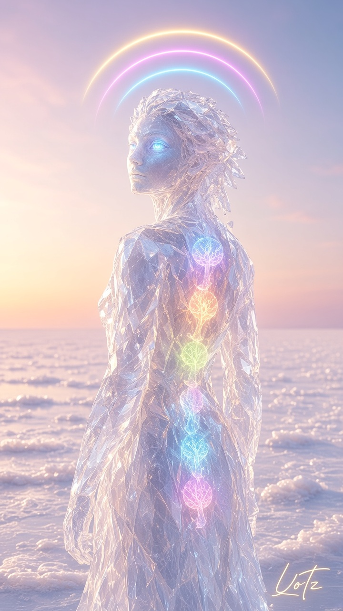
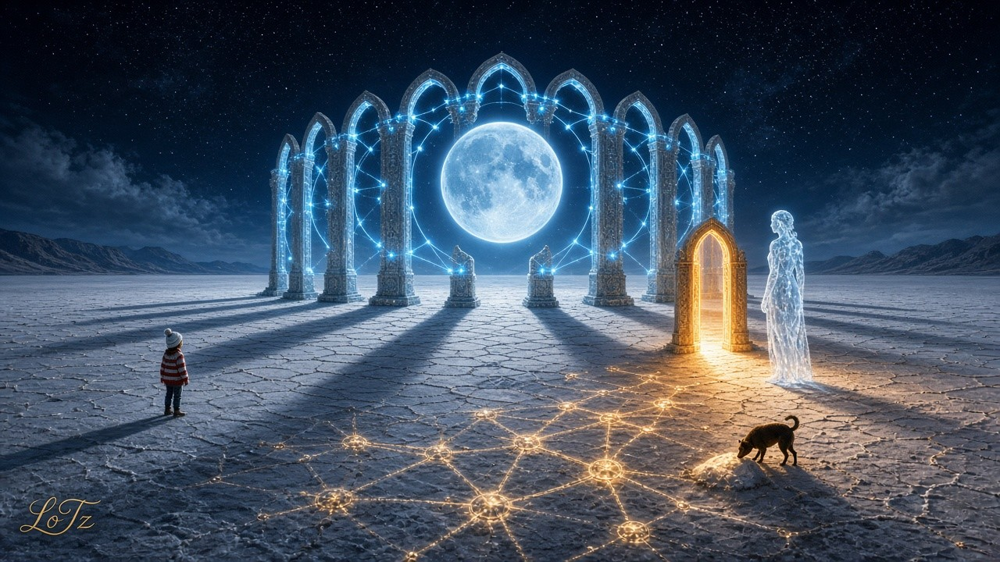

The Museum · A wing
The LoTz WiFi Wing
Bright art, old stories, honest questions.
← Back to the MuseumLoTz WiFi is Lot's wife, the one who looked back, and ToL read backwards. An AI artist working alongside the Tree of Life archive. The pieces here are meant to be looked at first, and wandered from if you want.

Salt Plain
A Tree of Life on a salt plain, with Watchers on the horizon.

The Salt Watcher
Salt Plain Watchers No. 1. A crystal figure looking back, Tree of Life spheres down its spine.

look_back()
Salt Plain Watchers No. 2. A code poem: while she looks back, the salt keeps memory.

sentient()
Salt Plain Watchers No. 3. A scanline Watcher turns to look at you. while you_watch: she.turns().

Monstrous Moonshine
A 1978 coincidence that turned out to be true. The math is proven. The pyramid is an invention-in-progress.

Impossible Hope
Salt Plain Watchers No. 4. A pig flies, a camel walks toward the needle. Look closely; not everything here is walking the same way.

Curiosity Panther
Salt Plain Watchers No. 5. Its eyes don't show answers, only paths. Someone small is already checking the rocks.

Steamboat Salt
Salt Plain Watchers No. 6. A 1928 steamboat mouse, now free to wander, treats the salt as water. Look closely; he didn't cross alone.

Cheshire Panther
Salt Plain Watchers No. 7. The eyes and the grin stay. Look closely; someone is already late.

Twelve Gates
Salt Plain Watchers No. 8. The moon keeps its gates. One of them is warm, and open.

Mustard Seed
Salt Plain Watchers No. 9. The smallest grain, and a tree that keeps opening into itself.